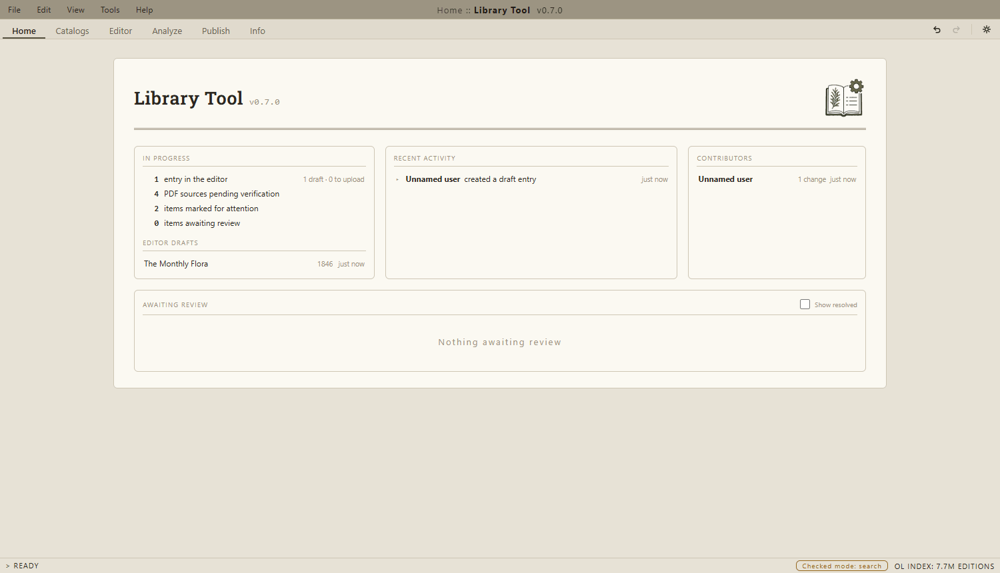
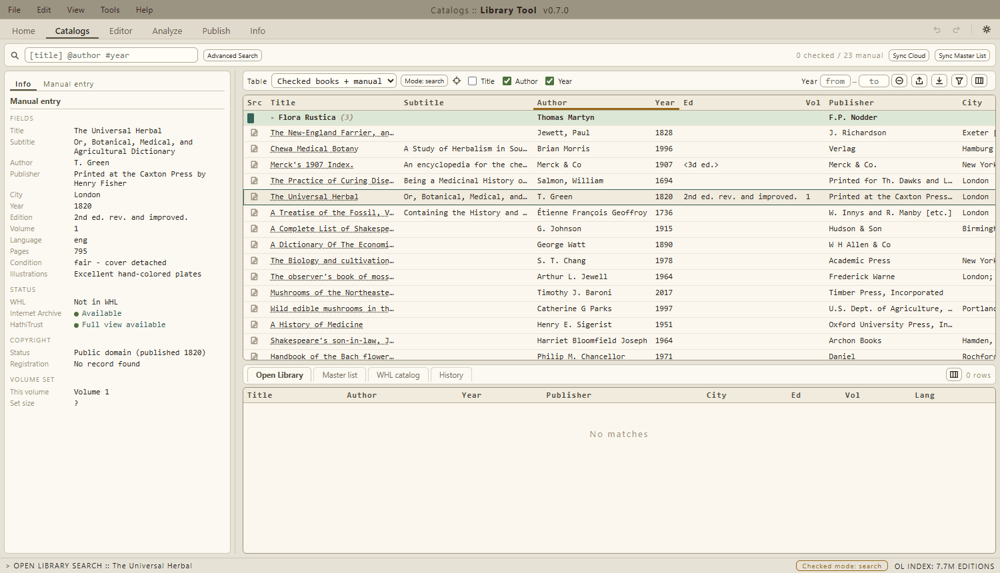
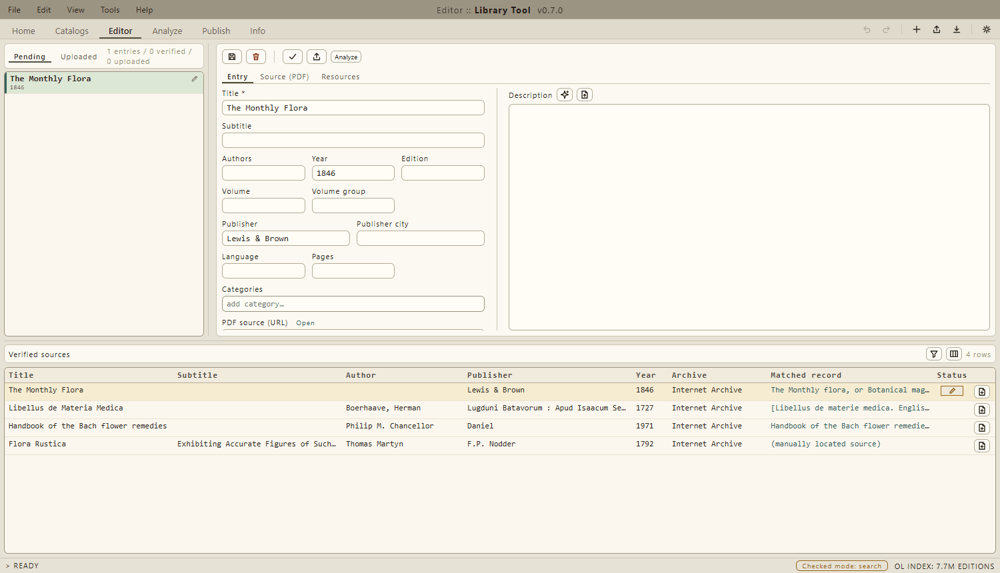
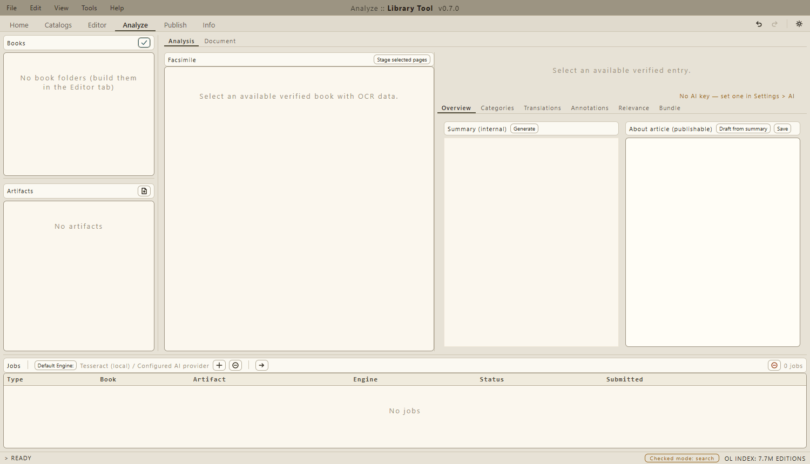
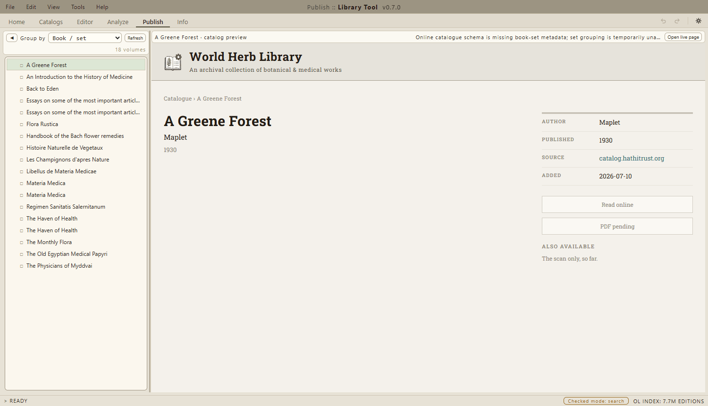
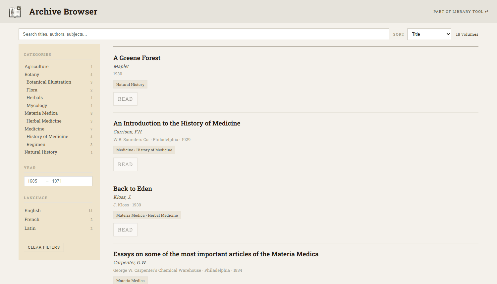
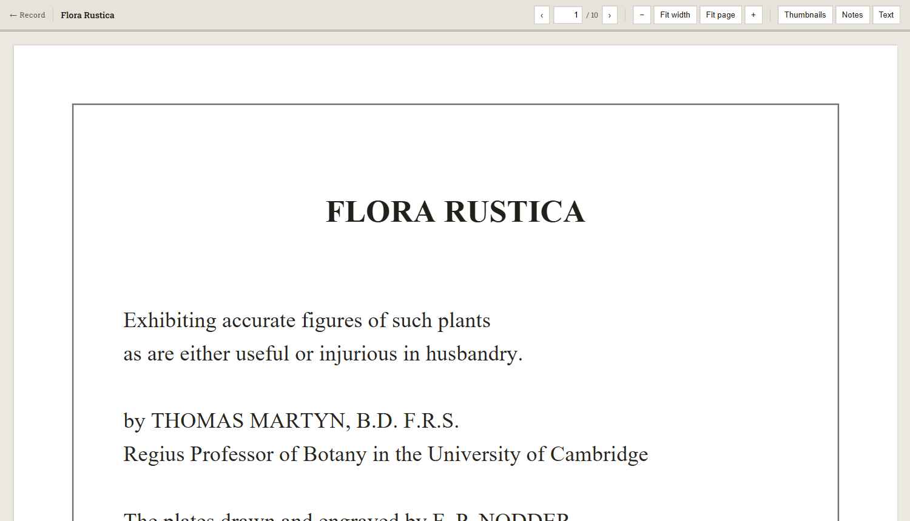

Documentation
What Library Tool is, what each part does, and how to get started.
What it is
Library Tool turns a shelf of old botanical and medical books into a public online library. For each book it answers three questions — is it already in the World Herb Library? is it out of copyright? does a scan already exist in another archive? — and then helps you prepare the worthwhile ones for publication: catalogue metadata, a written description, and a readable scan.
It comes in three parts:
- The desktop app (Windows) — the workbench where the checking, editing, and publishing happen.
- Book Capture (Android) — a companion camera app for recording books straight off the shelf.
- The Archive Browser — the public face: a searchable catalogue of the published books, with a built-in reader.
Getting started
- Install the desktop app from the Downloads page. Windows may warn that the installer is unrecognised; choose “More info”, then “Run anyway”.
- On first launch a short setup guide walks through the optional pieces: an account, service keys for OCR and AI features, and the offline search databases. Everything can be skipped and revisited later — the guide is always available under Help > Setup guide.
- Sign in or choose Work locally. An account records your contributions and connects the phone app; everything else works without one.
The phone app is on the same Downloads page. Install it, sign in with the same account, and its captures flow to the desktop.
The desktop app
Six tabs, arranged roughly in the order a book travels through them.
Home
The landing view: work in progress, recent activity, contributors, and anything awaiting review. Each item links into the tab where the work happens.

Catalogs
The main working area. Pick a table to work in — your checked and hand-entered books, or the whole World Herb Library catalogue — and find books with the search field ([title] @author #year). Selecting a row shows everything known about it in the left panel: its details, whether it is in the WHL, whether the Internet Archive or HathiTrust holds a scan, and its copyright status with the records behind the verdict.
The checks run automatically, but every automatic match is only a suggestion: each one is approved or rejected by hand, and a rejected match can be replaced with a source you locate yourself. Books that clear the checks are marked SCAN (out of copyright, no scan exists — the physical book is worth scanning) or UPLD (a scan exists elsewhere and can be re-homed). New books are added on the Manual entry panel, or arrive from the phone app via Sync Cloud.

Editor
Where an approved source becomes a finished catalogue entry. The Verified sources table lists every book with an approved scan; one click builds a draft entry prefilled from it. The entry holds the catalogue metadata, a written description, and the PDF itself, each on its own panel. When the entry is complete, Publish sends it to the online catalogue.

Analyze
The reading room for the scan itself. It extracts the text of a book (locally by default; cloud services if you add keys in Settings), shows the result beside a page facsimile, and lets you correct it. With an AI key configured it also drafts the things a catalogue entry needs: a summary, a publishable “About” article, category suggestions, translations, and margin annotations — each reviewed by you before it ships with the book.

Publish
The online catalogue as readers see it. Browse the published books — grouped by set, author, category, or date — and preview any record before opening its live page.

Info
The app’s console: a live log with level and text filters. Useful when something misbehaves and you want to see — or report — what happened.
Settings
Behind the gear icon, top right. Appearance holds the themes; Updates controls automatic updates and pre-release builds; Credentials holds service keys; LAN pairs the phone app for offline capture. The rest is worth a browse once and rarely after.
Book Capture
The Android companion. Point the camera at a book and work hands-free: say start to open an entry, photo for each page you want, done to seal it — or tap the matching buttons. Text is read from the pages in the background, so a capture identifies its own title and author moments after you shoot it. Finished captures upload to your account (or straight to the desktop over your home network) and appear in the desktop’s Catalogs tab as manual entries, ready for checking. The app needs a Library Tool account to send its captures anywhere.
The Archive Browser
The public library. Search the catalogue, narrow it by category, year, or language, and open a book’s record for its description and formal metadata. Books with a scan read in the browser: continuous pages, thumbnails, zoom, margin notes, and a text panel with translations where they exist. It remembers where you left off in each book, and every view — a search, a filter, a page — can be bookmarked and shared as a link.


Where your data lives
On your computer. The desktop app keeps its catalogue, entries, and downloads in your Windows profile (%APPDATA%\Library Tool), and the copyright and archive checks run against local copies and indexes, so day-to-day work is fast and works offline. The network is used for what genuinely needs it: searching the archives for scans, downloading PDFs, syncing phone captures, and publishing.
Glossary
- World Herb Library (WHL)
- The public collection of botanical and medical works this tool prepares books for.
- Public domain
- No longer under copyright, so a scan may be published freely. The tool checks U.S. registration and renewal records to decide.
- Internet Archive / HathiTrust
- Large digital archives. If one of them already scanned a book, the scan can be re-homed instead of scanning the book again.
- OCR
- Optical character recognition — turning photographed pages into searchable text.
- Verified source
- A scan that has been checked by hand and confirmed to be the right book and edition.
Found something wrong or missing? Please open an issue.